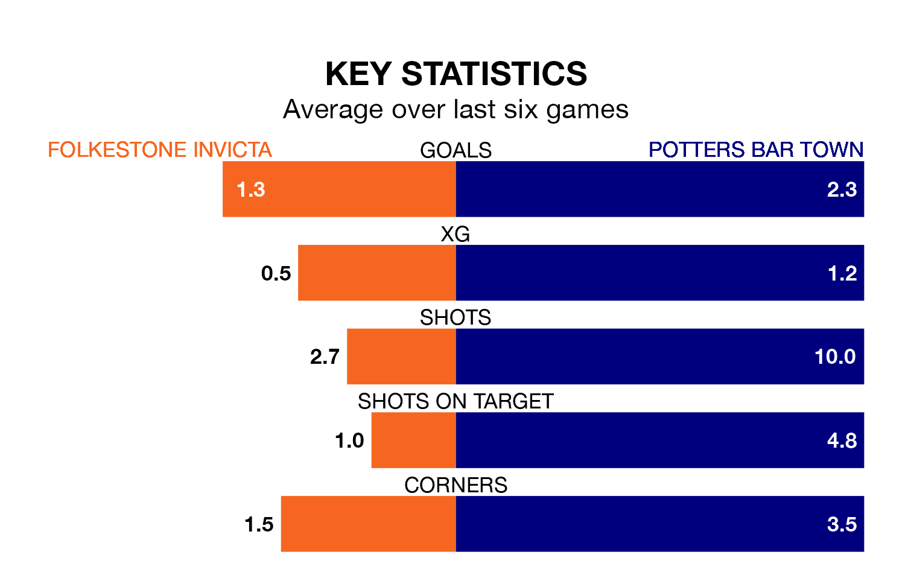

Folkestone Invicta host Potters Bar Town on Saturday at the Fullicks Stadium in the Isthmian Premier Division.
In their last league match, on Tuesday, Folkestone Invicta drew with Cray Wanderers 2-2 at home.
Potters Bar also drew, 1-1 at home against Carshalton Athletic.
In the last 10 years, Folkestone Invicta and Potters Bar have played each other on nine occasions. Folkestone Invicta won five of them, Potters Bar one, and they drew three times.
On average, Folkestone Invicta scored 3.2 goals and Potters Bar 1.3 in those matches.
Their last meeting was on September 26, when they played out a 3-3 draw.
Folkestone Invicta are 17th in the table after 29 games, of which they have won eight and drawn eight, earning 32 points.
Potters Bar are three places ahead of the home team in 14th, with nine wins and seven draws putting them on 34 points.
With 40 goals in 29 games so far this season, Folkestone Invicta are scoring at below the league average rate with 1.4 goals per game. And they are conceding more than average, letting in 49 goals at a rate of 1.7 per game.
Town are also below average scorers, with 1.5 goals per game, compared to a league average of 1.6. They have conceded 1.7 goals per game.
Folkestone Invicta are in disappointing form in the Isthmian Premier Division, with one win and three draws from their last six games.
With three wins and a draw over that period, the visitors' form is better – they have taken 10 points from 18, compared to the hosts' six.
Updated: 11:18 (UTC), 08/02/24